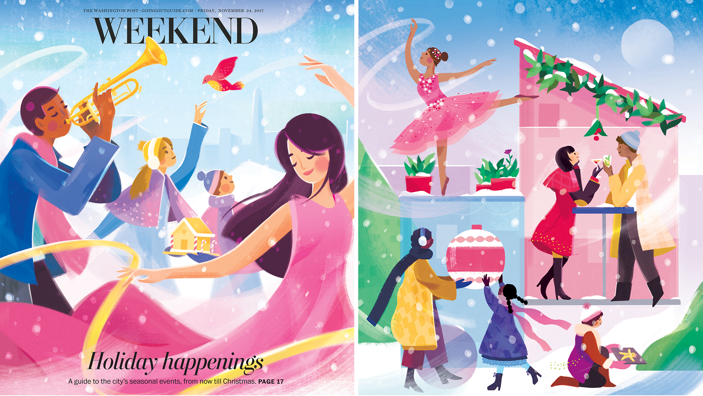
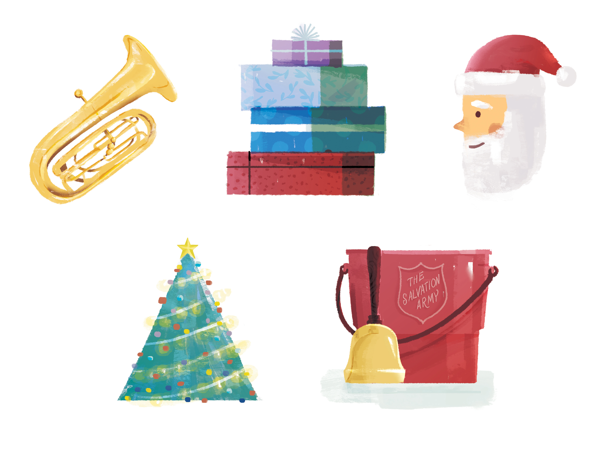
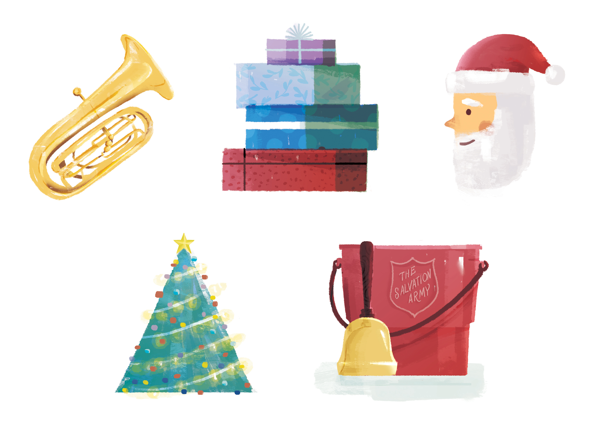
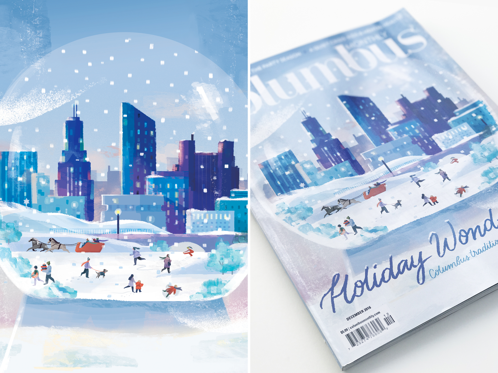
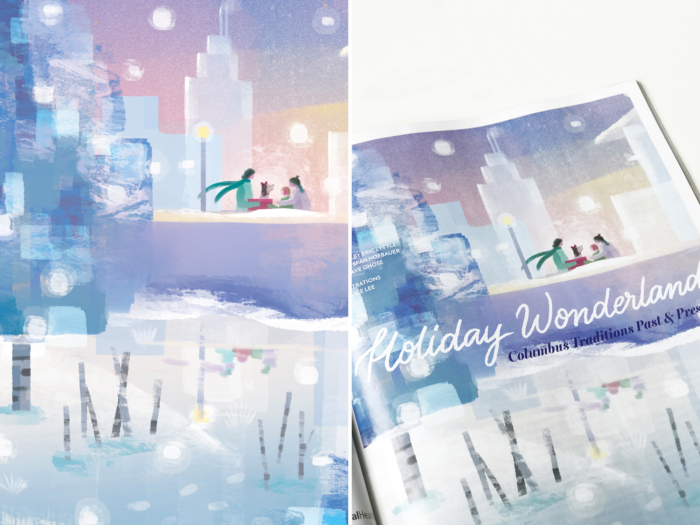
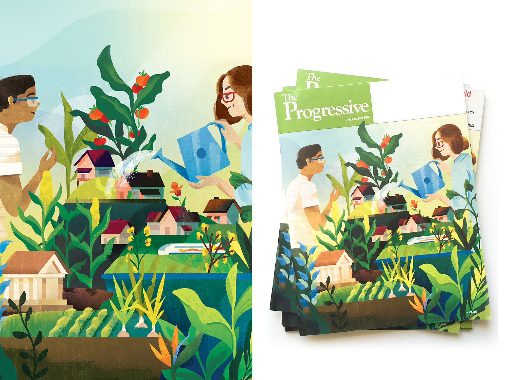
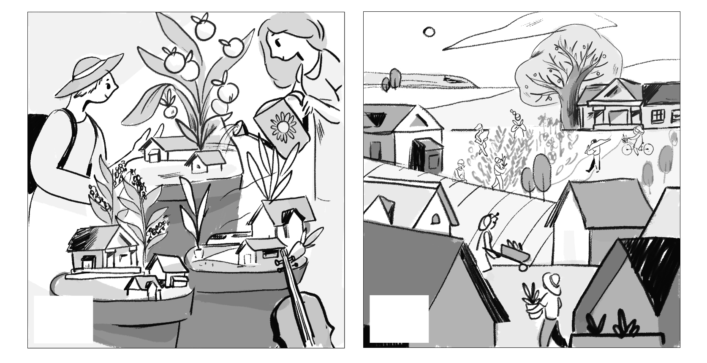

for The Washington Post
Section cover, inside spread, and spots illustrating holiday happenings for the Washington Post.
 

for Columbus Magazine
Illustrated cover, inside opener, and spots for The Columbus Monthly Magazine's winter issue on holiday traditions and happenings in Columbus.
 for The Progressive Magazine
Illustrated cover and inside spot for The Progressive Magazine's double summer July / August 2016 issue. The theme of the issue was about building better communities together, from plans to build a high-speed rail to connect different communities in the midwest, to the rise of locally-owned, community banks.
 